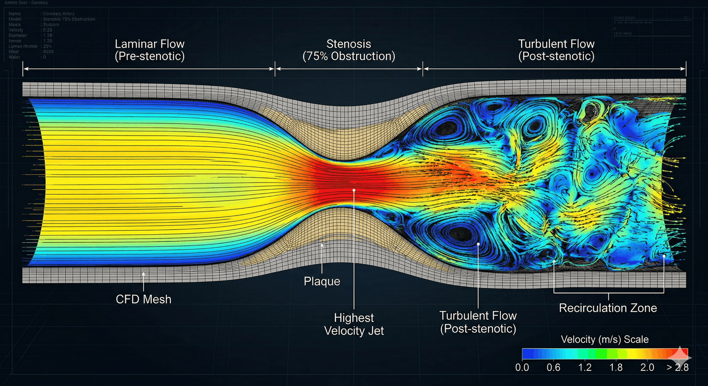
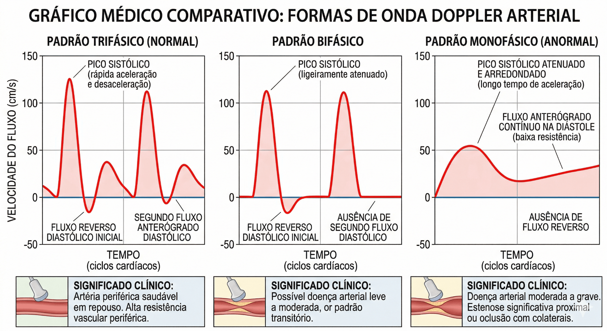
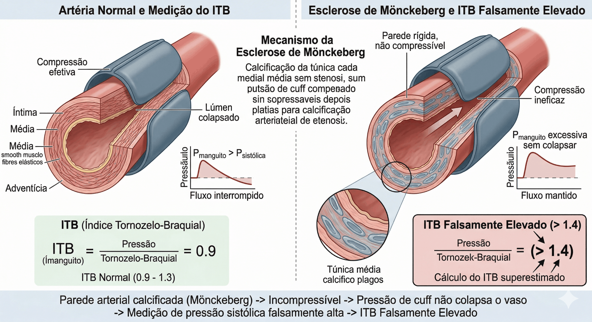
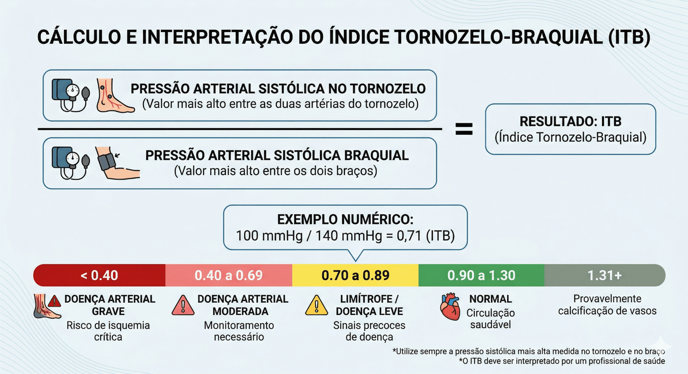
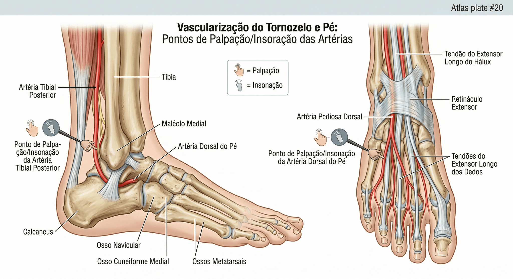
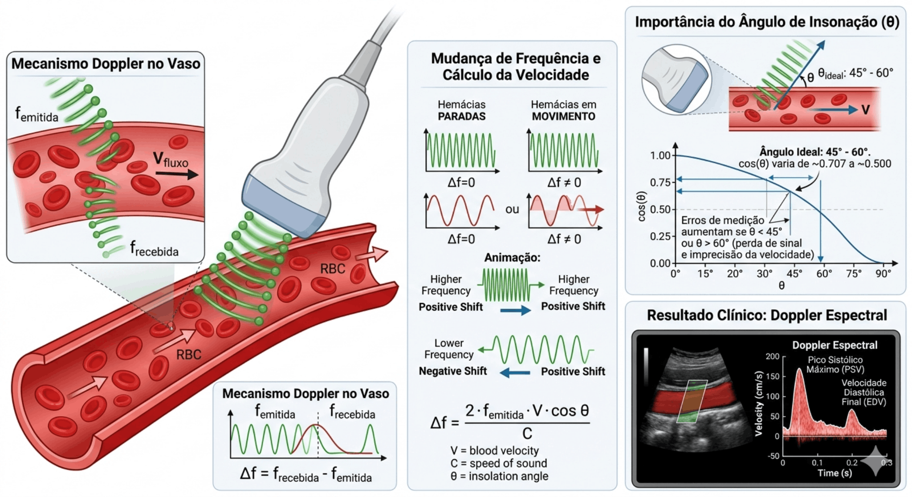
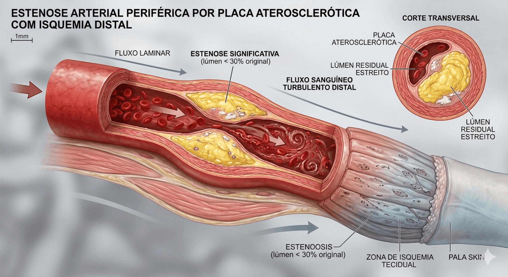
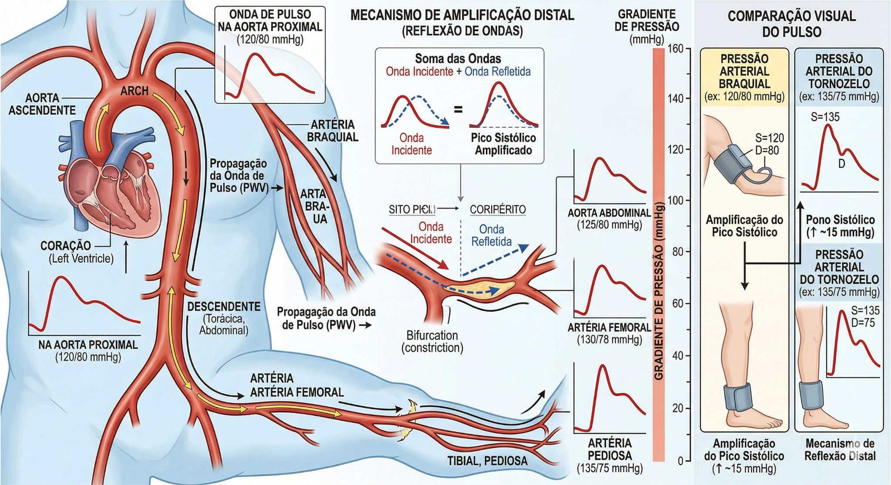
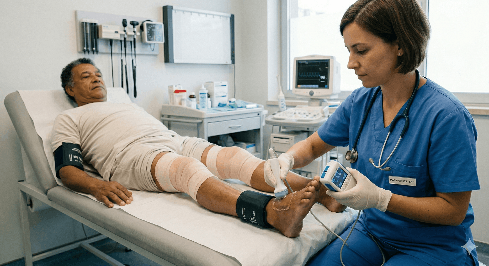
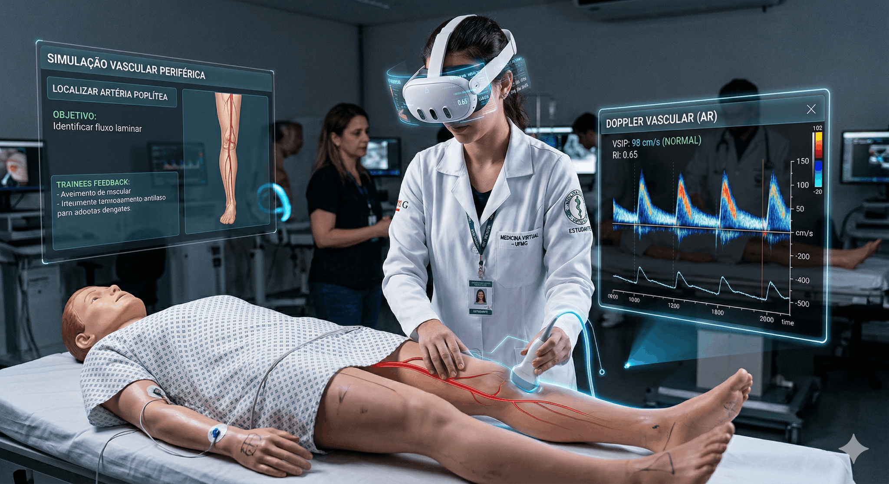

1. O que acontece no vaso

A estenose acelera o jato no ponto estreito e dissipa energia depois da lesão, com turbulência e recirculação. Isso ajuda a explicar por que a pressão distal cai e o ITB reduz.
2. Onda Doppler

Trifásica: padrão saudável. Bifásica: alteração leve ou transição. Monofásica: alerta de obstrução significativa.
3. Erro clássico: Mönckeberg

Quando o vaso fica rígido e incompressível, a pressão medida no tornozelo pode subir artificialmente. Resultado bonito demais, às vezes, é exatamente o problema.
4. Fórmula e faixas

Usa-se a maior pressão sistólica braquial e a maior pressão sistólica do tornozelo na perna analisada.
5. Onde medir

Os pontos principais são a artéria tibial posterior e a pediosa dorsal. Na prática, as duas importam.
6. Física do Doppler

7. Estenose e isquemia

8. Amplificação distal

9. Exame clínico

Paciente em decúbito dorsal, manguito, Doppler e técnica disciplinada. É o arroz com feijão — e é justamente por isso que precisa ser bem feito.
10. Simulação educacional

O simulador leve abaixo traduz essa lógica em decisão: posição, artéria, cálculo e interpretação final.
Simulador leve
Passo 1 · Posicionamento
Escolha a posição antes da medida.
Passo 2 · Qual artéria você quer usar para orientar a medida?
Lembrete: na interpretação final, vale a MAIOR pressão do tornozelo.
Passo 3 · Dados do caso
Braquial direita134 mmHg
Braquial esquerda128 mmHg
Tibial posterior142 mmHg
Pediosa dorsal138 mmHg
Onda: trifásica
Passo 4 · Calcular ITB
Clique para calcular usando a maior pressão braquial e a maior pressão do tornozelo.
Passo 5 · Interpretação
No caso 3, o número engana. A onda monofásica e a rigidez arterial denunciam a armadilha.